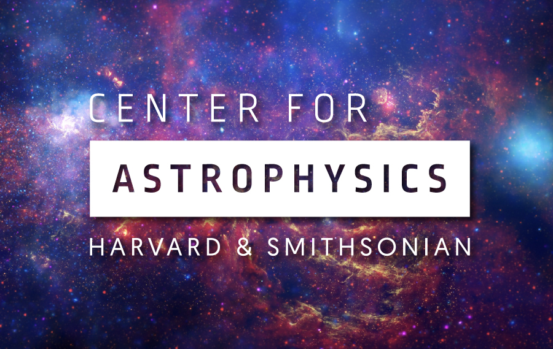
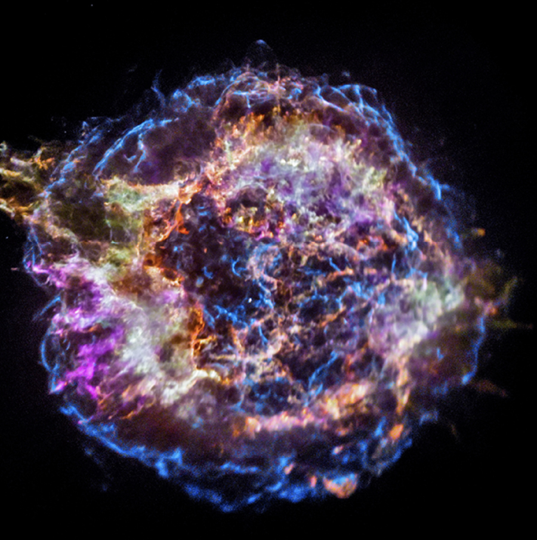

- Giant Magellan Telescope SAO is building critical GMT instrumentation — including a spectrograph to search for life on other worlds — for what will become the most powerful telescope in history.
- Event Horizon Telescope SAO leads the world in black-hole imaging, with direct technology transfer to defense and communications.
- Submillimeter Array SAO operates the SMA atop Maunakea on behalf of the entire U.S. astronomy community.
- Whipple Observatory Home to VERITAS and the MMT — infrastructure serving researchers, educators, and industry.

Discover Wonder
For more than 130 years, the Smithsonian Astrophysical Observatory has pushed the frontiers of astronomy — from the first measurements of our Sun to humanity's first image of a black hole.
0
Exploring the cosmos
since our founding
since our founding
Part of the largest astrophysics research center in the world
Telescopes on six continents, in Earth orbit, and beyond
Fostering the next generation of explorers
Fresh from the frontier
News from the Smithsonian Astrophysical Observatory
The latest discoveries and announcements, updated daily — all news at cfa.harvard.edu
America's Astrophysics Research Center
Our National & Global Impact
From planetary defense and frontier AI to pursuit of the greatest cosmic discoveries in history, SAO's work serves the nation and the world. We are core to the Smithsonian's mission to not only diffuse human knowledge, but increase it.
- Minor Planet Center Our Minor Planet Center is the world's sole authority for tracking asteroids and comets — including hazardous near-Earth objects — and the foundational data layer for NORAD, the U.S. Space Force, and NASA's Planetary Defense Coordination Office.
- TEMPO Satellite Our TEMPO Satellite provides the first real-time view of air quality and climate change impacts across North America.
- HITRAN The molecular spectroscopy database underpinning U.S. atmospheric modeling — relied on for directed energy, infrared sensing, and thermal imaging, with no commercial alternative.
- Greenland Telescope Anchors a visible U.S. scientific presence at Pituffik Space Base, the military's northernmost installation.
- Applying frontier AI to astrophysical data at scale — already partnering with the Department of Energy and NVIDIA on AI-for-science.
- NASA SciX and the Astrophysics Data System (ADS) — the discovery engine for the world's scientific literature, serving 16+ million visitors a year.
- Open code & data SAO publishes raw data and code in public repositories — reproducible, transparent, merit-reviewed science.
- Chandra X-ray Observatory SAO is the birthplace and national heart of high-energy astrophysics — operating NASA's flagship X-ray telescope since 1999, work recognized with the 2002 Nobel Prize.
- Chandra X-ray Center Home to the science and flight operations that turn Chandra's data into discovery for the entire U.S. astronomy community.
- Next-generation X-ray missions From the Einstein Observatory to Chandra to concepts like Lynx, SAO builds the X-ray observatories that come next.
- Central Engineering SAO's full-service engineering organization designs and builds state-of-the-art instrumentation for ground- and space-based missions — from the Parker Solar Probe to the Giant Magellan Telescope's planet-hunting spectrograph — supporting many missions at once rather than fragmenting capabilities across project-specific contracts.
- Telescope Data Center Our Telescope Data Center coordinates the use of visible-light telescopes by astronomers, keeps archives of the data from these observations, and provides computer tools for processing the data.
- Radio Telescope Data Center Our Radio Telescope Data Center (RTDC) is an archive of data collected by radio telescopes operated by the Center for Astrophysics, along with the computers and custom software packages used to process this data.
-
 Scientists Taking Astronomy to Rural Schools (STARS) equips rural
classrooms
with telescopes, ongoing teacher training, and standards-aligned lessons — then connects students
to research at SAO throughout their education.
Scientists Taking Astronomy to Rural Schools (STARS) equips rural
classrooms
with telescopes, ongoing teacher training, and standards-aligned lessons — then connects students
to research at SAO throughout their education.
- Science Education Department A national leader in the study of science learning — developing evidence-based STEM curricula, learning technologies, out-of-school programs, and teacher professional development for K-12 and beyond.
Our Discoveries
SAO Discoveries that changed our understanding of the Universe
Our scientists and the missions we've led have enabled some of the most transformative discoveries in the history of science
What we do
SAO-led projects & observatories
From X-ray space telescopes to instruments that watch over Earth itself, SAO designs, builds, and operates some of the most ambitious scientific facilities ever created.
 Space Telescope
Space Telescope
Chandra X-ray Observatory
NASA's flagship X-ray telescope, operated by SAO since 1999. Chandra reveals the hot, violent universe — exploding stars, colliding galaxies, and matter swirling into black holes.
chandra.si.edu Mission Concept
Mission Concept
Lynx X-ray Observatory
A vision for NASA's next great X-ray telescope, designed with SAO leadership: fifty times more sensitive than Chandra, built to watch the universe's first black holes ignite at cosmic dawn.
lynxobservatory.org Global Array
Global Array
Event Horizon Telescope
A planet-spanning network of radio dishes that captured humanity's first image of a black hole in 2019 — a discovery led from SAO and the CfA.
eventhorizontelescope.org Earth Science
Earth Science
TEMPO
SAO's space-based instrument measures air pollution over North America every hour — the first mission of its kind, turning astronomy's tools toward our own planet.
tempo.si.edu Next Generation
Next Generation
Giant Magellan Telescope
SAO is a founding partner of the GMT — a 25-meter giant rising in the Chilean Andes that will see the cosmos with ten times the sharpness of Hubble.
giantmagellan.org Radio Astronomy
Radio Astronomy
Submillimeter Array
Eight precision antennas atop Maunakea, Hawaiʻi, watching planets form and galaxies evolve — and a key station in the Event Horizon Telescope.
Visit the SMA Solar Science
Solar Science
Touching the Sun
SAO built the instrument suite that counts particles of the solar wind aboard NASA's Parker Solar Probe — the fastest spacecraft ever flown, brushing the Sun's outer atmosphere.
Solar & stellar science Gamma Rays
Gamma Rays
VERITAS
At SAO's Fred Lawrence Whipple Observatory in Arizona, four giant mirrors catch ghostly flashes from the highest-energy particles in the universe.
veritas.sao.arizona.edu Education
Education
MicroObservatory
Robotic telescopes that anyone — student, teacher, or curious mind — can command over the internet. Smithsonian science, in everyone's hands.
Take a picture tonight Optical Astronomy
Optical Astronomy
MMT Observatory
A 6.5-meter telescope on Mount Hopkins, Arizona — run jointly by SAO and the University of Arizona — hunting exoplanets, supernovae, and the structure of the cosmos.
mmto.org
Smithsonian STARS
Scientists Taking Astronomy to Rural Schools: SAO places telescopes, lessons, and ongoing mentorship in rural and tribal-nation classrooms across America — and keeps supporting those students all the way to college research.
smithsonianstars.si.edu
 Artificial Intelligence
Artificial Intelligence
AstroAI
An institute at the CfA pairing astrophysicists with artificial intelligence researchers — teaching machines to sift oceans of cosmic data and accelerate discovery, from exoplanet atmospheres to black hole physics.
astroai.cfa.harvard.eduWhere we come from
Over a century of looking up
SAO began on the National Mall with one man measuring sunlight — and grew into one of the largest astrophysics institutions on Earth.
1890
Born at the Smithsonian
Secretary Samuel Pierpont Langley founds the Smithsonian Astrophysical Observatory in a wooden shed behind the Castle in Washington, D.C., to study the Sun's energy — the "astro-physics" of its day.

1900s–1940s
Chasing the solar constant
Under Charles Greeley Abbot, SAO builds solar-monitoring stations on mountaintops from Chile to California, making decades of measurements of how the Sun powers Earth's climate.

1955
The move to Cambridge
SAO relocates to Cambridge, Massachusetts, alongside Harvard College Observatory — and within two years is tracking the first artificial satellites at the dawn of the Space Age.
1973
A powerful partnership
SAO and Harvard College Observatory join forces as the Center for Astrophysics — uniting Smithsonian and Harvard scientists in a single research community.

1999
Chandra opens the X-ray sky
NASA's Chandra X-ray Observatory launches aboard Space Shuttle Columbia, with science operations led by SAO — and rewrites what we know about the high-energy universe.

2019
Seeing the unseeable
The Event Horizon Telescope, with SAO leadership, unveils the first image of a black hole — the glowing ring of M87*, seen around the world within hours.
Today
From Earth's air to cosmic dawn
TEMPO watches North America's air quality from orbit, the Giant Magellan Telescope rises in Chile, and SAO scientists probe everything from exoplanets to the first galaxies.
Part of something bigger
The Center for Astrophysics | Harvard & Smithsonian
The Smithsonian Astrophysical Observatory and the Harvard College Observatory work side by side as the Center for Astrophysics | Harvard & Smithsonian — one of the world's largest and most productive astrophysics research centers, home to hundreds of scientists asking humanity's biggest questions.